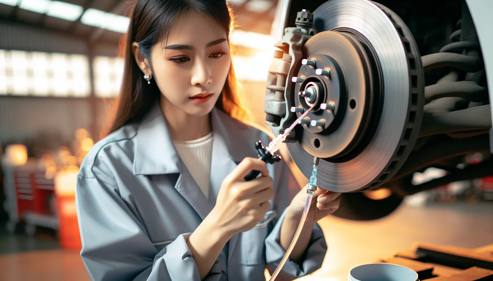

Vos freins grincent ? La pédale s'enfonce trop loin ? Voyant ABS allumé ? Chez DMT AUTOGROUP, on s'occupe de tout votre système de freinage : plaquettes, disques, liquide de frein, capteurs ABS, frein à main. Pièces de qualité, prix d'un garage indépendant. Pas de devis surprise. Piepen uw remmen? Gaat het pedaal te ver door? ABS-lampje aan? Bij DMT AUTOGROUP zorgen we voor uw volledige remsysteem: remblokken, schijven, remvloeistof, ABS-sensoren, handrem. Kwaliteitsonderdelen, prijs van een onafhankelijke garage. Geen verrassingen op de factuur.
Les plaquettes de frein, c'est la pièce d'usure numéro un de votre voiture. Chaque fois que vous appuyez sur la pédale, elles se consument un peu. C'est normal, c'est prévu comme ça. Ce qui n'est pas normal, c'est de rouler avec des plaquettes mortes. Remblokken zijn het slijtageonderdeel nummer één van uw auto. Elke keer dat u op het pedaal trapt, slijten ze een beetje. Dat is normaal, zo is het ontworpen. Wat niet normaal is, is rondrijden met versleten remblokken.
On le voit régulièrement : le client arrive avec un bruit métallique aigu à chaque freinage. Les plaquettes sont tellement usées que c'est le métal qui frotte sur le disque. Le disque est rayé, parfois fissuré. Au lieu de changer juste les plaquettes, il faut maintenant remplacer plaquettes ET disques. Le budget double. We zien het regelmatig: de klant komt binnen met een scherp metaalachtig geluid bij elke rembeweging. De remblokken zijn zo versleten dat het metaal op de schijf schuurt. De schijf is bekrast, soms gescheurd. In plaats van alleen de blokken te vervangen, moeten nu blokken EN schijven eruit. Het budget verdubbelt.
Chez un concessionnaire, un remplacement plaquettes + disques sur un essieu, c'est 450 à 700 euros. Chez un indépendant comme nous, vous payez 30 à 40% de moins pour la même qualité de pièces. On monte des Brembo, des TRW, des ATE — les marques que les constructeurs utilisent en première monte. La différence, c'est qu'on ne facture pas la marge concessionnaire. Bij een concessie kost een vervanging van blokken + schijven op één as 450 tot 700 euro. Bij een onafhankelijke garage zoals wij betaalt u 30 tot 40% minder voor dezelfde kwaliteit onderdelen. We monteren Brembo, TRW, ATE — de merken die constructeurs gebruiken als eerste montage. Het verschil is dat wij geen concessiemarge aanrekenen.
Les signes qui doivent vous alerter : un grincement continu (pas juste le matin), des vibrations dans le volant quand vous freinez, une pédale qui s'enfonce plus que d'habitude, la voiture qui tire d'un côté au freinage. Un seul de ces symptômes suffit pour passer nous voir. De signalen waar u op moet letten: een continu piepend geluid (niet alleen 's ochtends), trillingen in het stuur bij het remmen, een pedaal dat verder doortrapt dan normaal, de auto die naar één kant trekt bij het remmen. Eén enkel symptoom is genoeg om langs te komen.


Le voyant frein qui s'allume sur votre tableau de bord, ça peut être trois choses. Le niveau de liquide de frein est trop bas — souvent parce que les plaquettes sont usées et que le piston a avancé dans l'étrier. Le capteur d'usure a touché le disque — c'est son job, il vous prévient avant qu'il soit trop tard. Ou le frein à main est resté légèrement serré. Het remlampje dat op uw dashboard oplicht, kan drie dingen betekenen. Het niveau van de remvloeistof is te laag — vaak omdat de remblokken versleten zijn en de zuiger in de remklauw is opgeschoven. De slijtagesensor heeft de schijf geraakt — dat is zijn taak, hij waarschuwt u voordat het te laat is. Of de handrem staat nog licht aangetrokken.
Le voyant ABS, c'est autre chose. Le système anti-blocage a détecté un problème — un capteur de roue défaillant, un câblage abîmé, ou un souci au niveau du bloc hydraulique ABS. On branche la valise diagnostic, on lit les codes erreur, et on sait exactement quel capteur ou quel composant pose problème. Het ABS-lampje is iets anders. Het anti-blokkeersysteem heeft een probleem gedetecteerd — een defecte wielsensor, beschadigde bedrading, of een probleem met het hydraulische ABS-blok. We sluiten de diagnosecomputer aan, lezen de foutcodes uit, en weten precies welke sensor of welk onderdeel het probleem veroorzaakt.
Notre diagnostic inclut toujours un essai routier. On ne se contente pas de regarder les pièces — on teste le freinage en conditions réelles. La distance de freinage, le comportement de la pédale, la répartition du freinage entre l'avant et l'arrière. C'est comme ça qu'on repère un étrier grippé ou un flexible de frein gonflé qui ne se voit pas à l'oeil nu. Onze diagnose omvat altijd een proefrit. We kijken niet alleen naar de onderdelen — we testen het remsysteem in echte omstandigheden. De remafstand, het gedrag van het pedaal, de verdeling van de remkracht tussen voor en achter. Zo ontdekken we een vastgelopen remklauw of een opgezwollen remslang die met het blote oog niet te zien is.
Si votre contrôle technique approche, faites vérifier vos freins avant. C'est l'une des premières causes de refus au CT — et la plus facile à anticiper. Als uw technische keuring nadert, laat uw remmen dan vooraf controleren. Het is een van de eerste redenen voor afkeur bij de keuring — en de makkelijkste om te voorkomen.
Le liquide de frein est hygroscopique. En français : il absorbe l'humidité de l'air avec le temps. Et quand il contient trop d'eau, son point d'ébullition baisse. C'est un problème. En freinage intense — descente de montagne, autoroute, freinage d'urgence — le liquide peut se mettre à bouillir. Des bulles d'air se forment dans le circuit. Et l'air, contrairement au liquide, ça se comprime. Remvloeistof is hygroscopisch. In gewone taal: het absorbeert vocht uit de lucht na verloop van tijd. En als het te veel water bevat, daalt het kookpunt. Dat is een probleem. Bij intensief remmen — afdaling in de bergen, snelweg, noodstop — kan de vloeistof beginnen koken. Er vormen zich luchtbellen in het circuit. En lucht, in tegenstelling tot vloeistof, is samendrukbaar.
Résultat : votre pédale devient molle. Vous freinez, et la pédale s'enfonce sans résistance. C'est le cauchemar de tout conducteur. Et ça arrive. Resultaat: uw pedaal wordt zacht. U remt, en het pedaal zakt weg zonder weerstand. Het is de nachtmerrie van elke bestuurder. En het gebeurt.
La recommandation constructeur, c'est de remplacer le liquide de frein tous les 2 ans, quel que soit le kilométrage. On utilise un appareil de purge sous pression — pas la méthode "un qui pompe pendant que l'autre ouvre la vis". On mesure le taux d'humidité du liquide avant et après. Si vous roulez beaucoup ou si vous tracez votre voiture, on peut vous recommander du DOT 5.1 au lieu du DOT 4 standard. De aanbeveling van de constructeur is om de remvloeistof om de 2 jaar te vervangen, ongeacht de kilometerstand. We gebruiken een drukapparaat voor het ontluchten — niet de methode "de ene pompt terwijl de andere het ventiel opendraait". We meten het vochtgehalte van de vloeistof voor en na. Als u veel rijdt of uw auto op circuit gebruikt, kunnen we DOT 5.1 aanbevelen in plaats van standaard DOT 4.
C'est un entretien qui prend 30 minutes et qui coûte une fraction de ce qu'un problème de freinage peut vous coûter en dégâts — ou en accident. Het is een onderhoud dat 30 minuten duurt en een fractie kost van wat een remprobleem u kan kosten aan schade — of aan een ongeval.
Les freins arrière, on les oublie souvent. Pourtant, ils bossent aussi. Sur beaucoup de voitures, l'arrière c'est encore des tambours — surtout sur les citadines et les petites berlines. Les mâchoires de frein s'usent, les cylindres de roue fuient, le réglage automatique se bloque. Et un jour, le frein à main ne tient plus en côte. De achterremmen worden vaak vergeten. Toch doen ze ook hun werk. Op veel auto's zitten er achteraan nog steeds trommelremmen — vooral op stadsauto's en kleine sedans. De remschoenen slijten, de wielcilinders lekken, de automatische afstelling blokkeert. En op een dag houdt de handrem niet meer op een helling.
Le frein à main lui-même, c'est soit un câble mécanique, soit un frein à main électrique (EPB). Le câble, ça se détend avec le temps. On le retend, on le graisse, on vérifie que les leviers de rattrapage fonctionnent. Le frein à main électrique, c'est plus complexe — un moteur électrique sur chaque étrier arrière, piloté par un calculateur. Quand ça tombe en panne, il faut la valise pour diagnostiquer et recalibrer. De handrem zelf is ofwel een mechanische kabel, ofwel een elektrische parkeerrem (EPB). De kabel rekt uit na verloop van tijd. We spannen hem bij, smeren hem, en controleren of de naste mechanismen werken. De elektrische parkeerrem is complexer — een elektromotor op elke achterremklauw, aangestuurd door een computer. Als dat uitvalt, hebben we de diagnosecomputer nodig om te diagnosticeren en te herkalibreren.
On intervient sur les deux systèmes. Et si vos freins arrière sont des disques — ce qui est le cas sur la plupart des voitures récentes — on les traite exactement comme l'avant : plaquettes, disques, capteurs, étriers. Chez DMT AUTOGROUP, on a 15 ans d'expérience sur tous types de systèmes de freinage. On ne fait pas de raccourcis. We werken op beide systemen. En als uw achterremmen schijfremmen zijn — wat het geval is bij de meeste recente auto's — behandelen we ze precies zoals de voorremmen: blokken, schijven, sensoren, klauwen. Bij DMT AUTOGROUP hebben we 15 jaar ervaring met alle types remsystemen. We nemen geen shortcuts.
Pour un entretien complet de votre voiture — freins, vidange, filtres — consultez notre page garage automobile. On peut tout combiner en un seul rendez-vous. Voor een volledig onderhoud van uw auto — remmen, olieverversing, filters — bekijk onze pagina autogarage. We kunnen alles combineren in één afspraak.
Un léger grincement à froid le matin, surtout après une nuit humide, c'est souvent juste une fine couche de rouille sur les disques. Ça part après deux ou trois freinages. Par contre, si le bruit persiste toute la journée ou s'accompagne de vibrations, c'est un signe d'usure. Passez chez nous, on vérifie gratuitement. Een licht gepiep bij koude remmen 's ochtends, vooral na een vochtige nacht, is vaak gewoon een dun laagje roest op de schijven. Dat verdwijnt na twee of drie rembewegingen. Maar als het geluid de hele dag aanhoudt of gepaard gaat met trillingen, is het een teken van slijtage. Kom langs, we controleren het gratis.
Chez un concessionnaire, comptez entre 250 et 450 euros par essieu. Chez nous, c'est nettement moins — avec des plaquettes de qualité identique (Brembo, TRW, ATE). On vous donne un prix exact avant de commencer. Pas de surprise sur la facture. Bij een concessie rekent u op 250 tot 450 euro per as. Bij ons is het merkbaar goedkoper — met remblokken van identieke kwaliteit (Brembo, TRW, ATE). We geven u een exacte prijs voor we beginnen. Geen verrassingen op de factuur.
En général, les disques tiennent deux jeux de plaquettes — environ 60 000 à 80 000 km. Si vos disques ont un rebord marqué ou des rainures profondes, c'est le moment. On mesure l'épaisseur : si c'est en-dessous du minimum constructeur, on vous le montre pièce en main. In het algemeen gaan schijven twee sets remblokken mee — ongeveer 60 000 tot 80 000 km. Als uw schijven een uitgesproken rand hebben of diepe groeven, is het tijd. We meten de dikte: als het onder het minimum van de constructeur zit, laten we het u zien met het onderdeel in de hand.
Une pédale molle, c'est souvent de l'air dans le circuit ou du liquide de frein trop vieux. Si la pédale s'enfonce jusqu'au plancher, ne roulez pas — faites-vous remorquer. Si elle est juste un peu spongieuse, une purge du circuit résout le problème dans la majorité des cas. Een zacht pedaal is vaak lucht in het circuit of te oude remvloeistof. Als het pedaal tot op de bodem doortrapt, rij dan niet — laat u wegslepen. Als het gewoon een beetje sponsachtig aanvoelt, lost een ontluchting van het circuit het probleem in de meeste gevallen op.
Vous pouvez rouler, mais votre système anti-blocage est désactivé. Ça veut dire qu'en freinage d'urgence, vos roues risquent de bloquer — surtout sur route mouillée. La cause la plus fréquente : un capteur ABS encrassé ou défaillant. On diagnostique ça en 20 minutes. Ne laissez pas traîner. U kunt rijden, maar uw anti-blokkeersysteem is uitgeschakeld. Dat betekent dat bij een noodstop uw wielen kunnen blokkeren — vooral op nat wegdek. De meest voorkomende oorzaak: een vuile of defecte ABS-sensor. We diagnosticeren dat in 20 minuten. Laat het niet aanslepen.
Plaquettes, disques, purge, diagnostic ABS
Lundi — Vendredi · 08:30 — 18:00
Mechelsesteenweg 270, 1933 ZaventemRemblokken, schijven, ontluchting, ABS-diagnose
Maandag — Vrijdag · 08:30 — 18:00
Mechelsesteenweg 270, 1933 Zaventem